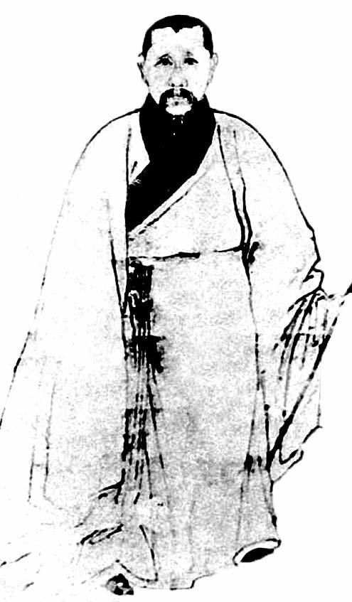

五
情况如此严重，朝廷若不引导，“打砸抢”或有燎原之势。《小腆纪年附考》记，五月十八日乙巳，“明以大理寺丞祁彪佳为右佥都御史，巡抚苏、松。”[67]“巡抚”之意，一为巡视，二是抚平，使事态平息、地方稳定。不过，徐鼒所记祁彪佳动身日期并不准确。查《祁忠敏公日记》，清楚地写着：“初九日，早行。”[68]足足要早九天。而祁彪佳使命的讨论，则为五月初一，亦即福王监国当天，由史可法亲自主持议定。[69]徐鼒之误并不奇怪，他不可能见过祁彪佳日记，后者于民国二十六年才被发现。对我们来说，祁彪佳日记留下的时间记录，更足以表现事态的紧迫与朝廷的重视。
整个五月和六月，祁彪佳在苏州、松江两府，各处巡视。所到处几乎必有一项内容：会见当地“诸生”。这些人，正是“闹事”主体。五月十二日，“发文讫，即至文庙，易墨衰行香，与诸生言辨上下定民志之意。”[70]五月十三日，“出会乡绅孝廉于玉华山，讯其地方利病。”[71]五月十五日，“抵丹阳，会有司绅衿，读诏书讫，以君父大义谕之诸生，且言忠孝之心不可无，忠孝之名不可有。”[72]五月二十一日，“少泊马（码）头，江阴诸生具呈。”[73]五月二十二日，“令缙绅俱出迎，赍诏至县开读，下午会诸绅孝廉文学于（无锡）公署。”[74]……之所以在不同地方频繁、重复做同一件事，其原因在五月二十五日和二十八日两天日记中交代最清楚：
二十五日，往文庙行香。时吴中当借名从逆士民嚣变之后。予乃对诸生痛哭以告：必守礼恪法；嗣后条陈，必投匣而进，公呈必佥押由学官转申……如不吾从，吾不能一日在。诸生咸踊跃听命。[75]
二十八日……延吴门诸生章美、周茂兰、华渚等二十余人来晤。盖前此吴门焚抢从逆之家，多青衿为之倡，而此诸生者，皆表表才品，心甚非之。有纠缪一帖，甚得风俗纪纲之正。予故延其来晤。[76]
祁彪佳像。
甲申年五月初一日，福王监国当天，史可法派祁彪佳以右佥都御史，巡抚苏、松，赶去处理因降附问题而引发的严重骚乱。祁彪佳在其告示中指出：“叛逆不可名，忠义不可矜，毋借锄逆报私怨，毋假勤王造祸乱。”

方以智像。
方以智，“四公子”之一，明末的全才人物。甲申之变，他在北京，先是藏匿，后被闯军俘获，由此被马、阮列入“从逆”名单。
看来，当时在朝中主政的史可法为应付这场危机而采取的措施是，果断派出一位威望素著的特使，借重他的正面形象和感召力，化解、消弭骚动。应该说，这是机智简明的一招，祁彪佳也很好地运用了个人魅力。当然，他并不一味只是晓之以理、动之以情，也曾做出严厉处断，例如在常熟：
时宦敏以被焚抢泣诉于沿途。薄暮抵常熟，署印（代理官职）州倅（倅，副职）陈淳来谒，询其焚抢之事，出所访姓名，令连夜拘提。[77]
第二天：
即至公署审抢犯。予昨所行拘者，多不肯吐，而捕官别拘三人，皆有时份家之真赃，乃立枭于门，而抢时宦妻子尼菴者，其犯亦杖毙之。即刻张告示，余者皆不究。人情大安。[78]
这位遭到焚抢的时敏，为北京兵科官员。他在城陷前对人说：“天下将一统矣。”随即投附大顺。及闯军败走，时敏“遁归故里”，而在他回来之前，家中已遭焚抢，且“波及族党”。对于这个确切的“从逆者”的投诉，祁彪佳仍予受理，依法处置打砸抢人员。他认为，从逆是从逆，法度是法度；法度不可因某种理由而破坏，不管那理由如何高尚。他这样奏闻朝廷：
民情嚣动，借名义愤，与其振之使惧，不如威之使服。国法诚申，人心自正。宜将从逆诸臣先行处分，使士民无所藉口，则焚掠之徒可加等治。[79]
同时公告地方：
叛逆不可名，忠义不可矜，毋借锄逆报私怨，毋假勤王造祸乱。[80]
既明确“叛逆”应予追究，又指出“正义”不能用以违法，一切都该分清是非，纳入法度解决。他以理性和清明，阻止了乱局蔓延。